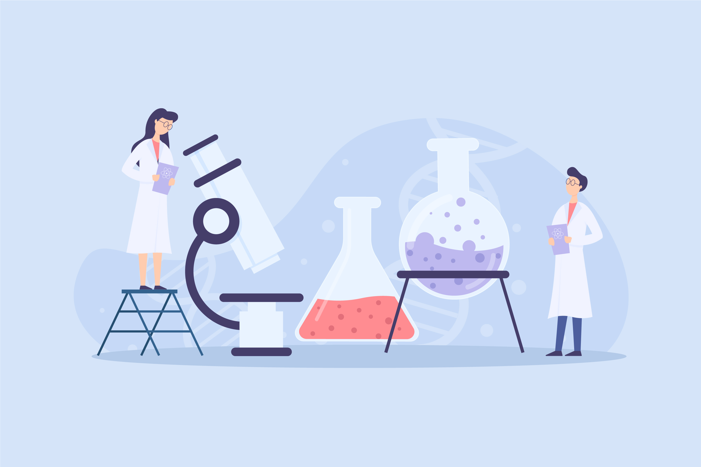

Goal 1: Define the parts of the Experimental Design.

Scientific experiments allow scientists to test hypotheses and find out how something happens. Watch this video for more information.
The independent variable in an experiment is a condition that is manipulated or changed by a scientist.
There should only be one independent variable in an experiment. This makes sure only one thing is affecting the experiment.
The dependent variable is observed and measured during an experiment. It responds to the independent variable.
The conditions that do not change during an experiment are known as constants.
An experimental group is the group that receives the change.
The control group does not receive the change. A control group is used to compare the results of the experimental groups.
The hypothesis is what you think will happen in the experiment. When writing a hypothesis, you use the following format:
If independent variable, then dependent variable. You explain what you are doing to the independent variable and tell what you think will happen to the dependent variable as a result of what you did to the independent variable.
Multiple trials are used to increase the reliability of results.
Read this article for more information.